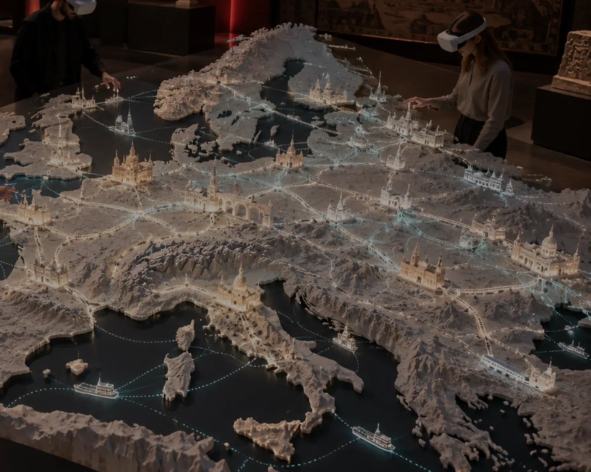
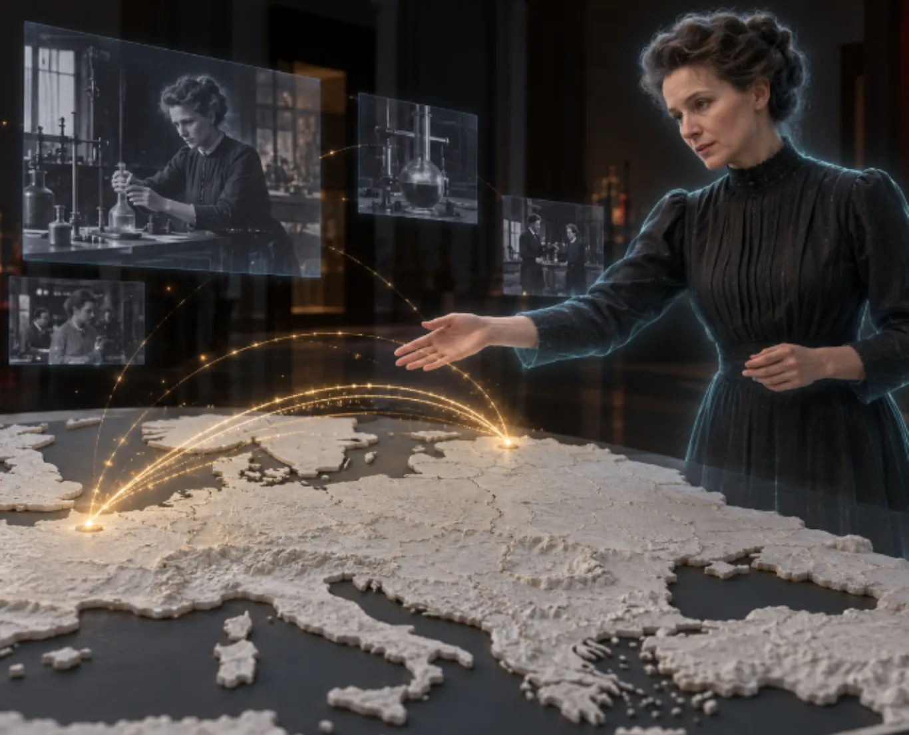
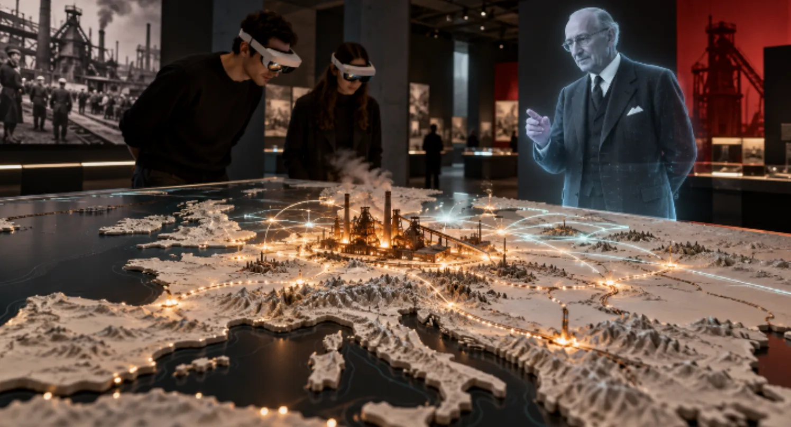

Génie Culturel · Maison de l’Histoire européenneHouse of European History
EUROPE
MÉMOIRES VIVANTESLIVING MEMORIES
Une maquette augmentée pour rencontrer l’histoire européenneAn augmented scale model to encounter European history
Basé sur notre produit Maquette Augmentée AR/VRBased on our Augmented Scale Model AR/VR product

Des personnages qui donnent vie au continentCharacters who bring the continent to life
Marie Curie
Les savoirs voyagent, les trajectoires se croisent.Knowledge travels, paths intersect.
Robert Schuman
La coopération prend forme sur le relief de l’Europe.Cooperation takes shape on the relief of Europe.
Figures proposées, à choisir avec le muséeProposed figures, to be chosen with the museum

Personnages à hauteur humaine. Musée et maquette restent visibles dans le casque.Life-size characters. The museum and the model remain visible in the headset.
Un premier chapitre à construire ensembleA first chapter to build together

Reconstruire et relier l’EuropeRebuilding and connecting Europe
Un objet des collections ouvre le récit. Le personnage apparaît. La maquette révèle les liens.An object from the collections opens the story. The character appears. The model reveals the connections.
Format proposéProposed format
3 à 5 minutes, un chapitre à tester avec vos publics.3 to 5 minutes, one chapter to test with your audiences.
Prochaine étape : choisir un public, un objet et un objectif pédagogique.Next step: choose an audience, an object and a learning objective.
Construisons ce premier
chapitre ensemble.Let’s build this first
chapter together.
← Retour aux Mockups← Back to Mockups · Barryland · genieculturel.ch